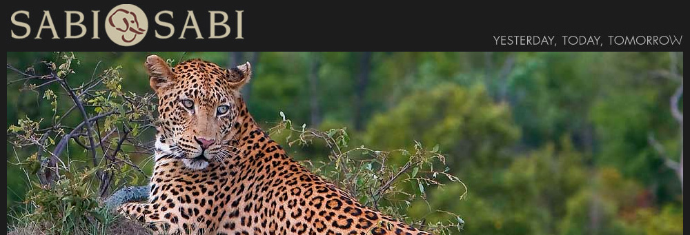

SABI SABI PRIVATE GAME RESERVE
SERVIZI OFFERTI DA DESTINATIONS
Media & Public Relations, Sales & Marketing Representation e Advertising.
Nel cuore della natura, all'interno della Riserva Sabi Sand del Parco Nazionale Kruger, sorge Sabi Sabi Private Game Reserve,
un luogo in cui il safari diviene un'esperienza che tocca tutti i sensi.
Costituita da quattro lussuosi lodge di categoria cinque stelle,
Sabi Sabi Private Game Reserve hanno dettato nuovi standard nell'industria del turismo di lusso grazie agli alloggi, al servizio,
alla cucina e all'eccezionale vita selvaggia che offre alla clientela.
La filosofia "ieri, oggi e domani" di Sabi Sabi deriva da oltre 100 anni di esperienza nei safari, una storia perfettamente riprodotta nell'atmosfera magica di ciascun lodge, che racchiude in sé anche lo stile distintivo del Sudafrica e la sua calorosa ospitalità.
Selati Camp riflette l'era coloniale sudafricana, quando nel tardo XIX secolo iniziarono le costruzioni lungo la ferrovia Selati Railway Line che collegava l'ovest alla costa est.
Otto suite illuminate solo con lanterne rispecchiano questa magia del passato.
Con le sue 25 suite, tra cui la Mandleve Presidential Suite, il Bush Lodge rappresenta il moderno stile africano, ideale per respirare l'atmosfera dell'odierno Sudafrica.
Earth Lodge, con le sue tredici esclusive suite di lusso, è stato votato da Conde Nast Traveler USA come uno dei migliori 52 luoghi del mondo.
Disegnato come nessun altro lodge, ha un'architettura mozzafiato, un look essenziale e un impiego innovativo di tessuti, fibre, luci e spazi.
Little Bush Camp, infine, è il più esclusivo dei lodge Sabi Sabi grazie alle 6 suites che assicurano riservatezza e intimità alle coppie in viaggio di nozze
e a chi è in cerca di romanticismo a contatto con la natura.
Ogni lodge è circondato da tantissime specie di animali, volatili e piante, inclusi i "Big Five": elefante, rinoceronte, leone, leopardo e bufalo.
Ranger e tracker di grande esperienza e professionalità rendono unica l'esperienza di safari africano, regalando la rara possibilità
di fare incredibili incontri ravvicinati durante ogni safari.
Un luogo incantato da vivere in ogni suo spettacolare aspetto.